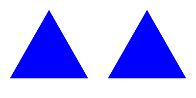

ClosePath()
Syntax
ClosePath()Description
Closes the current figure in the vector drawing path by adding a straight line to the starting point of the figure. The starting point is the location of the last MovePathCursor() call. When a path is filled, only closed figures are taken into account.
Parameters
None.
Return value
None.
Example
If OpenWindow(0, 0, 0, 400, 200, "VectorDrawing", #PB_Window_SystemMenu | #PB_Window_ScreenCentered) CanvasGadget(0, 0, 0, 400, 200) If StartVectorDrawing(CanvasVectorOutput(0)) ; Create a path with two closed triangles MovePathCursor(20, 160) AddPathLine(100, 20) AddPathLine(180, 160) ClosePath() MovePathCursor(220, 160) AddPathLine(300, 20) AddPathLine(380, 160) ClosePath() ; fill the path VectorSourceColor(RGBA(0, 0, 255, 255)) FillPath() StopVectorDrawing() EndIf Repeat Event = WaitWindowEvent() Until Event = #PB_Event_CloseWindow EndIf

See Also
FillPath(), IsInsidePath(), MovePathCursor(), AddPathLine()
Supported OS
All